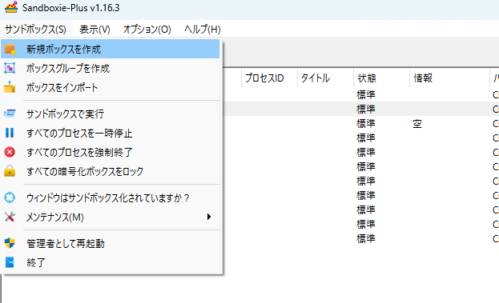
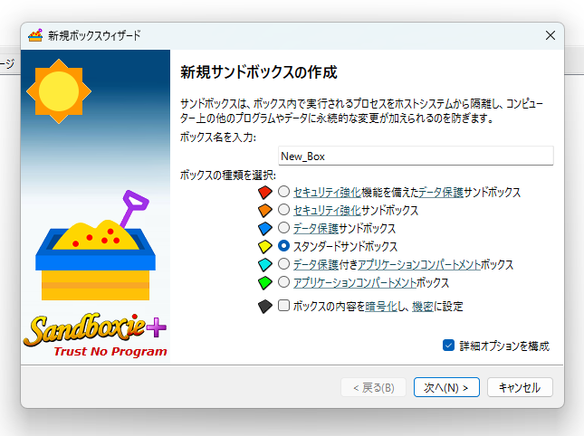
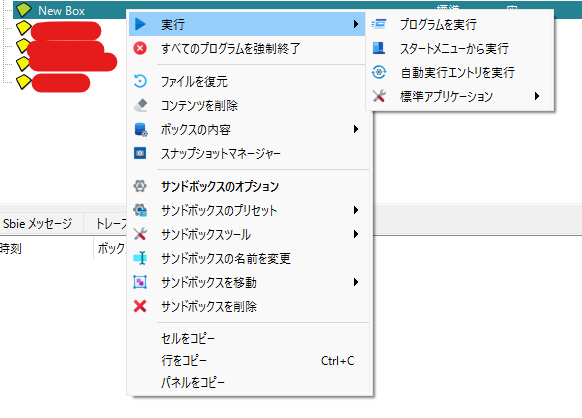
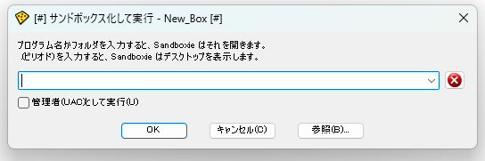
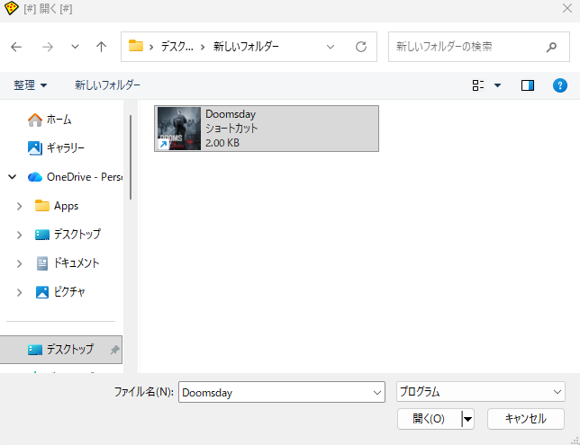
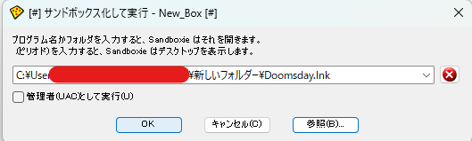
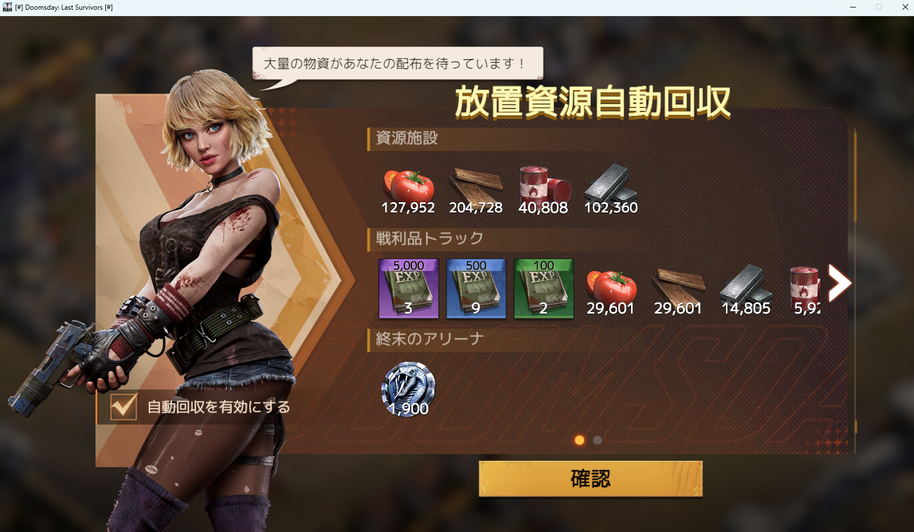
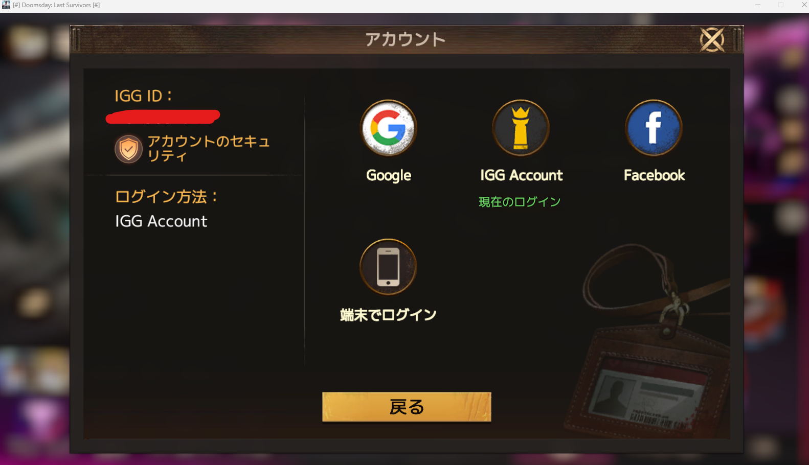
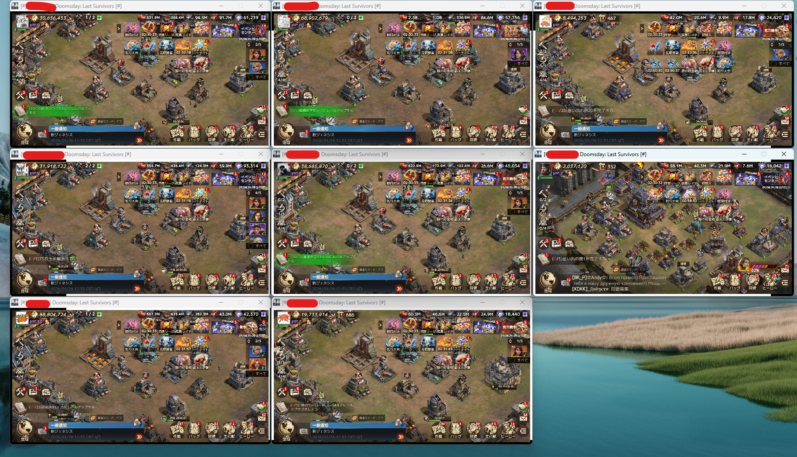
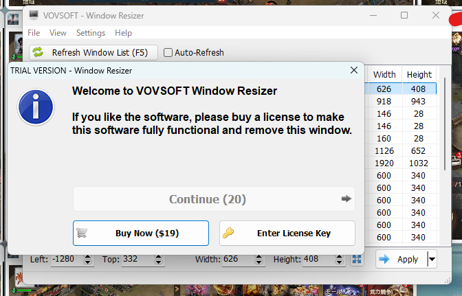

裏ボスから
「やり方教えて！！」とよく聞かれるので私のサブ垢の管理や、マクロなどについて少し書こうと思います。
使っているツール
-
Sandboxie-Plus
https://sandboxie-plus.com/サブ垢を多重窓で起動するためのツールです。
初回起動時にログイン情報を保存できるので、毎回入力せずにスムーズにログインできます。 -
Window Resizer
https://vovsoft.com/download/window-resizer/多重起動したソフトのサイズを無理やり小さくして画面に配置するためのソフトです。
-
AutoHotkey
https://www.autohotkey.com/自動周回や連打など、マウス操作を制御できるツールです。
多重操作やヘルプbot用マクロに使います。 -
TinyTask
https://tinytask.net/マウスやキーボードの動きを録画して繰り返せるマクロツール。
コードを書かずに直感的に作れます。 -
その他 AIツール
Gemini や ChatGPT など。
AutoHotkey のマクロは基本的にAIに書いてもらっています。
導入手順① 多重起動編
Sandboxie を起動し、新規サンドボックス作成からスタンダードサンドボックスを作成します。
 保存先はスキップ、もしくはそのままでOKです。
「プログラムから実行」を選択
こんな画面が出てきます
「参照」を押して Doomsday の起動用ショートカットを選択
OK を押します
管理者権限の警告が出ますが、そのままOKで。
起動するとこんな感じ
IGG Account からサブ垢に切り替えます
次回からはログインをスキップして多重起動できるので、とても便利です～
サブ垢追加時は、新規サンドボックスを作成して同じ手順を繰り返してください。
便利設定として「サンドボックスのオプション」も調整しておくと良いです。

導入手順② 画面レイアウト編
最終的にはこんな感じ
Window Resizer 起動時に「課金しろっ！！！」と表示が出ますが、30秒待てば無料で使えます。

ここからは自分がどんなレイアウトをしたいか、
どんなモニターのサイズを使っているかなどによりますが、
私はデュアルディスプレイで、横1920px 縦1080pxのモニターを使っているので、これを9分割するには？ということで、
１個のドゥムデの大きさをWidth:600 Height:340にしました。
ウィンドウサイズと配置に規則性を持たせるのが超重要です。
レイアウトが完成したらCSVを保存しておくと次回が楽です。
なんか、このソフトがポンコツなので、CSVを読み込んでも位置や大きさが若干ズレることがあります。
そのため私は2回読み込んでます＾＾；；；
導入手順③ マウス同時操作編
マクロを書き、AutoHotKeyで実行し、ヘルプ連打・同時操作・ハイブラリー・重症兵治療ポチポチなどを自動化します。
人によってやりたいことをコード化していく作業になります。
私はコードなんて書けないので、AIに要件を伝えて書いてもらいましたｗ
例えば、同時操作はこんな感じ
マウス同期.ahk
一番左上のドゥムデをクリックすると、対応した座標を順番にクリックしていき、
最後に元いた位置にカーソルを戻すマクロです。
すなわち、キーボードの同期やマウスのドラッグなどはできませんｗ
故に、野戦とかは無理です。すべてクリックだけで完結しなければなりません。
ハッキリ言ってポンコツなので改良の余地はありますが、
すごく上手くやればゾンビ狩りとかもできる感じです。
まあ、こんな感じです。
一番知りたい部分は同時操作だと思いますが、マクロは各々の環境次第で動かないこともあったりして、
割と試行錯誤をする部分なんですよね。
アイデアを出してAIに書いてもらう部分がメインになるので、頑張ってみてください。